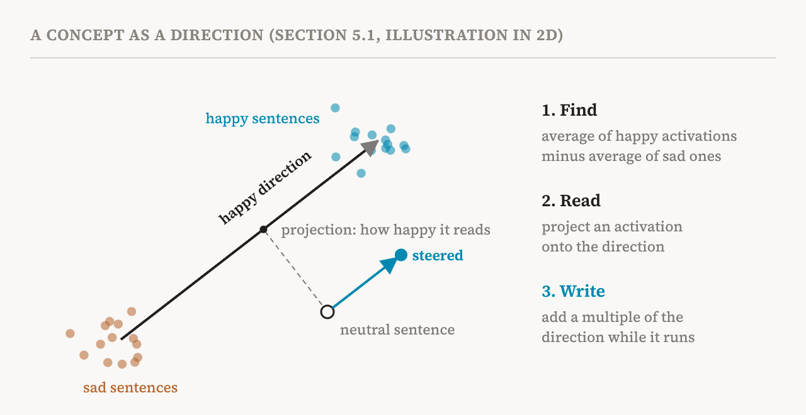
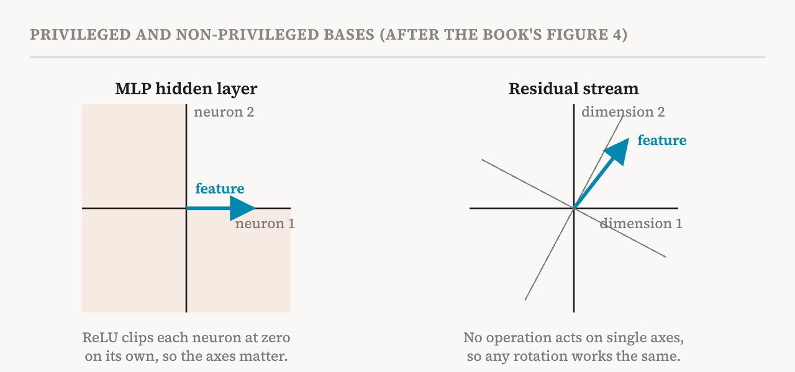

Part 5 ended with a question: if single neurons are often not the right unit for reading a model, what is? The book's fifth chapter takes up four hypotheses about how networks represent information and carry out computation. None of them is proven, but each has shaped which methods the field builds and which experiments it runs. This part covers the first and most influential, the linear representation hypothesis, in section 5.1 (pages 27–28).
The hypothesis
The linear representation hypothesis says that straight-line directions in activation space are effective basic units for representing concepts. In the book's wording, a concept can be represented by a feature that is a linear direction in the activation space.
Two consequences follow, and they are what make the hypothesis so useful. The first is about reading. To measure how strongly a concept is present in an activation, you take its projection onto the concept's direction: you ask how far the activation reaches along that direction. Think of walking north-east across a city. The distance you have covered northwards is the projection of your walk onto the north direction. In the same way, the projection of an activation onto a "happiness" direction says how happy the model's current state reads. Mathematically, it is a single multiplication and sum, which the book writes as φᵀh(x).
The second is about writing. Adding the direction to an activation, or a multiple of it, should push the model's behaviour towards the concept, and subtracting it should push the behaviour away. If a model stores happiness along a direction, then adding a little more of that direction partway through the computation should make what it writes a little happier.

Strong and weak versions
The book distinguishes two versions of the hypothesis. The strong version says that all concepts are best represented by linear features. Then a model's activation at any moment could be written, approximately, as a sum of feature directions, each multiplied by how strongly that feature is active for the current input. Understanding the activation would amount to finding the list of directions and reading off the strengths. The weak version says only that some concepts are represented linearly.
The difference matters a great deal. Under the strong version, a complete dictionary of directions would be a complete account of what a model represents, and part 10's sparse autoencoders are an attempt to build exactly that dictionary. Under the weak version, linear tools will work for some concepts and miss others.
Why linearity makes analysis tractable
A linearly represented feature corresponds to a fixed direction, and its presence can be detected by projecting onto that direction. This is what makes mechanistic analysis manageable. Simple methods suffice to find a feature, measure it and manipulate it, for example by scaling it and adding it back into the activations.
An old example, from outside the book, gives a feel for this. In 2013, researchers found that in word embeddings, the vector for "king" minus the vector for "man" plus the vector for "woman" landed close to the vector for "queen". A direction for gender, roughly, could be added and subtracted like a quantity. The book's companion notebook for this section does something similar with a modern model. It collects GPT-2's activations for happy sentences and for sad ones, takes the difference between their averages as a "happy" direction, shows that projecting onto it separates new happy and sad sentences, and then adds the direction during generation to steer GPT-2's writing towards happier or sadder text.
Not every space has meaningful axes
The book then makes a subtle point about where features can be expected to line up with neurons.
Different parts of a model have activation spaces with different geometry. In the hidden layer of an MLP, a nonlinear function such as ReLU acts on each neuron separately. That singles out the neuron axes: it matters which numbers are neurons, because each is clipped at zero on its own. The coordinate system is meaningful, and the book, following earlier work, calls it a privileged basis.
In other spaces, such as the residual stream, no operation acts on the coordinates one at a time. Everything that reads from or writes to the stream does so through matrix multiplications, which treat all directions alike. If you rotated the stream's coordinate system and adjusted the weights around it to match, the model would compute exactly the same thing. Such a space has a non-privileged basis, and there is no reason for features to line up with its axes. They can point in any direction.

This explains a lot. Where the basis is privileged, a single neuron can serve as a feature that stands for a concept. Where it is not, features may be directions, or other shapes, that do not match any individual neuron, and specialised methods are needed to find them in the activation space. It is one reason neurons are sometimes readable and sometimes not, and why researchers search for directions rather than inspecting dimensions of the residual stream.
The evidence for it
The book lists three kinds of support for the weak version. Linear probes, the simple classifiers of part 3, succeed in reading a wide range of concepts out of a wide range of models. Activation steering along a single direction can produce targeted changes in behaviour, as in a 2024 study that steered models by adding one vector to their activations. And sparse autoencoders recover, at scale, features that are linearly accessible and that can be used for steering.
The evidence against it
At the same time, the book reports substantial evidence that not all representations are well described as straight-line directions. Some features interact nonlinearly. Some algorithms inside models rely on nonlinear transformations. Some features are spread across several subspaces that interact with each other.
Two of the cited studies make this concrete. A 2023 study of a small transformer trained to add numbers modulo a fixed number found that the model represents numbers as positions on circles and adds them by combining rotations, using trigonometric identities. And a 2025 study, titled bluntly "Not All Language Model Features Are One-Dimensionally Linear", found that language models represent the days of the week and the months of the year as points arranged on a circle: a two-dimensional shape in which Monday sits next to Tuesday and Sunday wraps round to Monday. The study also found evidence that models use these circles when they work out, for example, which day comes two days after a given one. No single straight direction can hold that wrap-around.
Some researchers go further. One 2024 essay argues that features may not always exist as explicit objects in a model at all, but may emerge from the dynamics of its circuits. On that view, asking for "the direction" of a concept might sometimes be the wrong question.
A useful approximation
The book's verdict is measured. The linear representation hypothesis is best viewed as a useful approximation that holds in some settings, not as a universal law. That is a good way to hold it while reading the rest of the series. Many of the most successful tools, from probes to sparse autoencoders to steering vectors, assume linearity, and their successes are evidence that a lot of what models represent is linear enough. Their failures are often places where it is not.
| Term | Meaning |
|---|---|
| Linear representation hypothesis | The idea that concepts are represented as straight-line directions in activation space |
| Projection | How far an activation reaches along a direction; it measures a linear feature's strength |
| Strong version | All concepts are linear, so an activation is a weighted sum of feature directions |
| Weak version | Only some concepts are represented linearly |
| Difference in means | Finding a direction by subtracting the average activation without a concept from the average with it |
| Steering | Adding a multiple of a direction to activations to push behaviour towards a concept |
| Basis | The set of axes used to write down the coordinates of a space |
| Privileged basis | Axes made special by an operation, such as ReLU, that acts on each coordinate separately |
| Non-privileged basis | Axes that no operation singles out, so any rotation of them works equally well |
| Multidimensional feature | A feature that needs more than one direction, such as days of the week on a circle |
The book's notebook for this part, linked in the references, runs the happy and sad experiment on GPT-2. Next, part 8 takes up the second hypothesis: that models store far more features than they have dimensions.